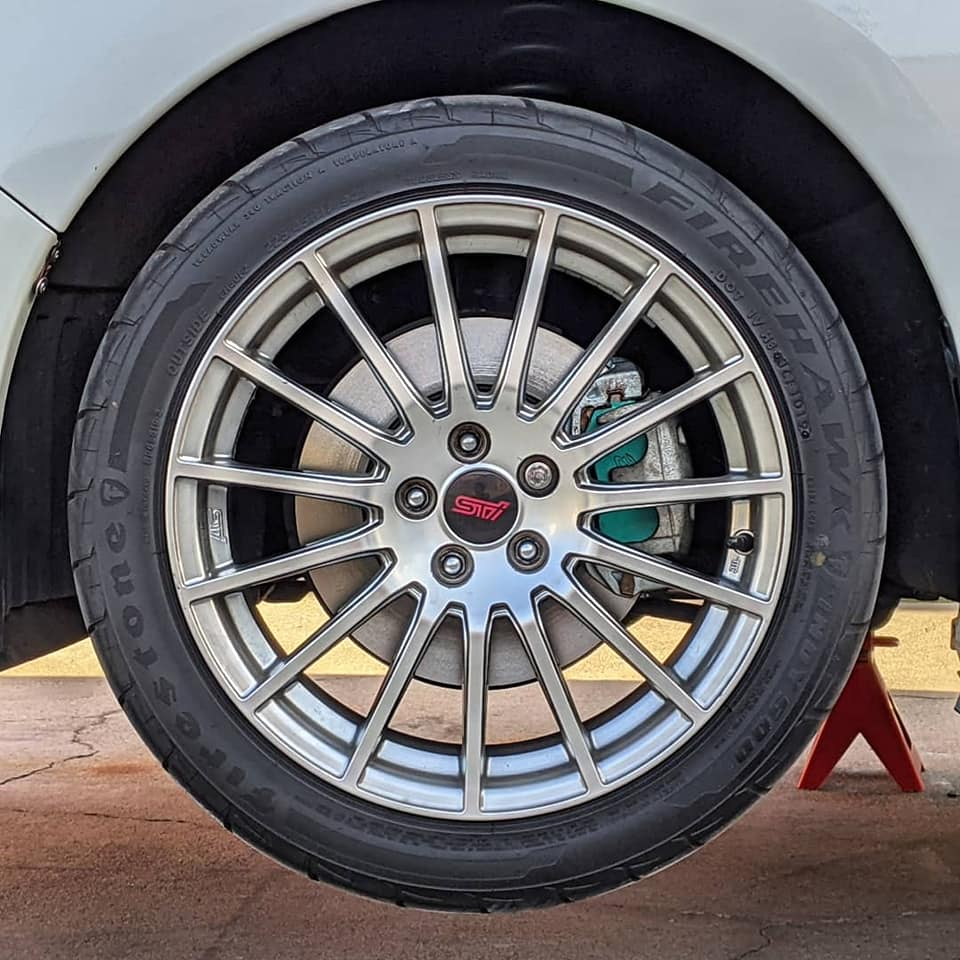
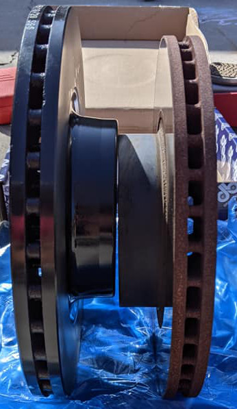
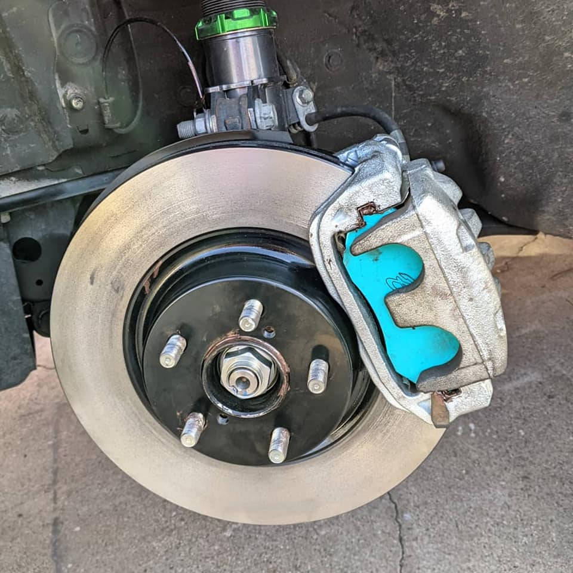
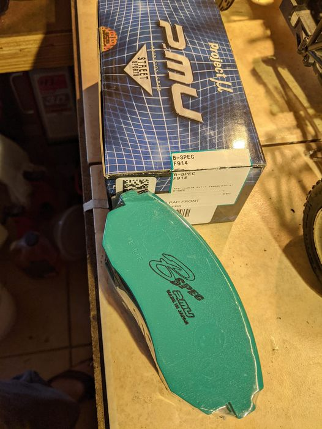

Poor man's OEM+ front big brake upgrade for the Impreza (2012-2016)

Larger Rotors, better pads, lighter wheels
TLDR; Crosstrek owners have it lucky with standard large front brake rotors, Impreza owners looking to beef up
their
braking can use Crosstrek parts for better stopping power.

WRX/crosstrek sized front rotor vs Impreza front rotor (right)
For reference:
2012-2016, 2017+ All Imprezas models have 10.9" (~275mm) front rotors.
All crosstreks and only the 2017+ Impreza Sport models use 11.6" (~295mm) front (wrx sized) rotors.
By using larger front caliper brackets and rotors, the tuner can increase stopping power. This is basically a
simple straight forward upgrade to any Impreza owner. If you want to go 4pot wrx, the cost
is significantly more ($600+) without much more benefit. This upgrade still utilizes the same front 2 pot brake
calipers found on all crosstrek/Imprezas. Fitment is OEM, should clear even 16inch wheels.
Calipers brackets:
Taken from the Crosstrek 2013-2017, these are used to handle a larger diameter rotor. Approximately $50 per side.
Part numbers:
Left side - 26225SC030
Right side - 26225SC020

Larger Rotors, better pads
Rotors:
I used KNS blanks rotors made by DBA, basically a beefy T3 rotor with the kangaroo vanes and high carbon iron minus
the
fancy slots and colour changing heat paint. Weight difference between OEM front Impreza rotors and these DBA rotors
is a
whopping 1100g or 2.45lbs! That's a lot more thermal capacity. As stated above a 20mm increase in size will provide
extra brake torque aka stopping power. Of course you can choose your own based on your budget.
Brake pads:

Project Mu - B-spec front brake pads
I chose Project Mu B-Spec pads. They have 0-500c and 0.32-0.45u rating, almost double the heat rating compared to
OEM. I
thought I needed the OEM shims, but found the caliper was too tight, so no shims are needed. Bonus is getting the
Project Mu blue backing plate showing through 😎
Thoughts:
Even though the OEM brake system was very good for daily driver stopping, the goal of this setup is to increase the
ability to handle heat during spirited, canyon carving or downhill runs.
We shall see if the extra 1.1kg of rotating mass per front wheel is worth the trade off. The extra brake torque
should
also theoretically increase stopping power. Hopefully acceleration and brake bias isn't too far off from stock. I'll
obviously have to get used to the new pads as they are grippier than the oems.
If you are an Impreza owner ready for a rotor and pad service, it's as simple as attain 2 front brackets, and
larger
front rotors. The rest is the same.
I hope this helps others.
Update:
The use of brake shims (brake pad backing plate) is needed.
After some time, when the pads wear down enough, there will be enough room to fit the backing plates with the brake pads.
The OEM backing plates include a sort of shim which helps deaden brake vibration noise. I have enjoyed solid street braking
performance with this setup.